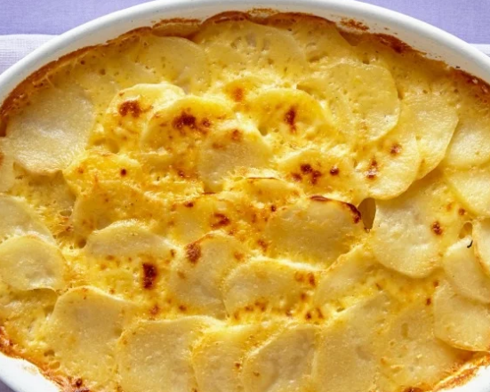

Home
Scalloped Potatos
Juick Baked Ham
Gratin Potatoes

Description
They are excellent as leftovers warmed up in the
microwave with eggs and bacon the next day," says Ingalyn
Ingredients
Ingredient Checklist
- cooking spray
- 1 ½ cups grated Parmesan cheese
- 2 tablespoons minced fresh rosemary
- 2 cloves garlic, minced
- 3 ½ pounds red potatoes
- 3 tablespoons butter
- 3 tablespoons all-purpose flour
- 2 cups whole milk
- ½ teaspoon salt
- 1 teaspoon olive oil